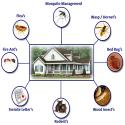

Dry Wood Termites
Termite facts Did you know that sub-terranean termites can build upto 40 feet high mounds (termite colony). That is like a typical four-storeyed building. Naturally termites are not a pest and their recycling of wood and other plant matter is of considerable ecological importance. It is only when they get into our house and start damaging its structure and wood; we consider them to be a pest. Termites are sometimes called "white ants", though they are not closely related to true ants. Two of the major types of termites are Drywood termites and Sub -terranean termites.
Control Measures
Drywood termites live in dry, undecayed wood like limbs of trees, utility poles, posts, and lumber. Dry wood termites termites do not require a lot of moisture which makes them live in dry places. They do not require constant contact with the soil for their survival like it's Sub-terranean Cousin.
In a tropical country like India Sub-terranean termites are of more significance as they cause extensive damage. Subterranean termites are social insects which live in colonies in the ground. They build vertical tunnels that look like mud tubes (known as shelter tubes) above ground level in the search of food. Wood is made up of Cellulosic material which is the favorite food of Sub-terranean termites. Termites can also damage material of organic origin with cellulosic base such as paper, cardboard, fabric, furniture, etc. However Sub terranean termites are known for their voracious tendencies and can damage even non-cellulosic substances also in search of the food and shelter.
Treatment and Cost
Treatment cost for sub-terranean termites can be decided only after physically inspecting the premise as termite treatment cost is based on method of treatment, severity of infestation, structural factors, size of the house and the extent of damage. Just call our technical staff to get your premises thoroughly inspected free of cost. We offer our free termite inspection seven days a week and at the client's convenience.
Contract with our professional pest and termite control company to periodically inspect your home. This will help detect termite activity and allow for an early and proper action.
To control the termites in any premises the following two options/methods are available for our Clients. You can choose the cheaper termite treatment or the one which is more expensive. Regardless of the treatment cost, both methods have prove to be the most effective termite treatments.
NOTE: We provide termite control services in entire Karnataka state We have earned the reputation as one of the best Anti termite treatment company in Karnataka for the last 16 years
We Also provide Pest Control Services in Delhi NCR and Lucknow for below Pest Control Solutions
-
 Click Here...
Click Here... -
 Click Here...
Click Here... -
Click Here...
-
 Click Here...
Click Here...